Legendary Commanders and Strategists
These military leaders demonstrated exceptional strategic vision, tactical brilliance, and inspirational leadership that left lasting impacts on warfare and civilization.
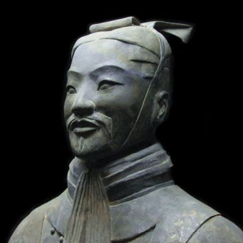
Sun Tzu
c. 544–496 BCE
Ancient Chinese military strategist and philosopher best known for authoring "The Art of War," which has influenced military thinking, business tactics, and beyond for over two millennia.
Key contributions: Emphasis on knowing oneself and the enemy, winning without fighting, and the importance of deception and flexibility in strategy.
Read Details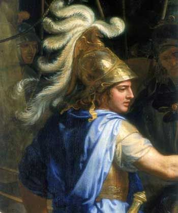
Alexander the Great
356–323 BCE
King of Macedon who created one of the largest empires in ancient history, stretching from Greece to northwestern India. Undefeated in battle, he is considered one of history's most successful military commanders.
Key contributions: Innovative use of the phalanx combined with cavalry, founding of cities that spread Hellenistic culture, and integration of conquered peoples into his administration.
Read Details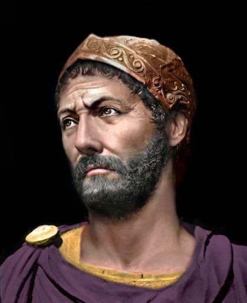
Hannibal Barca
247–183 BCE
Carthaginian general considered one of the greatest military tacticians in history. Famous for leading an army (including war elephants) across the Alps to attack Rome during the Second Punic War.
Key contributions: Mastery of double envelopment tactics (exemplified at Cannae), psychological warfare, and sustaining a campaign in hostile territory for over a decade.
Read Details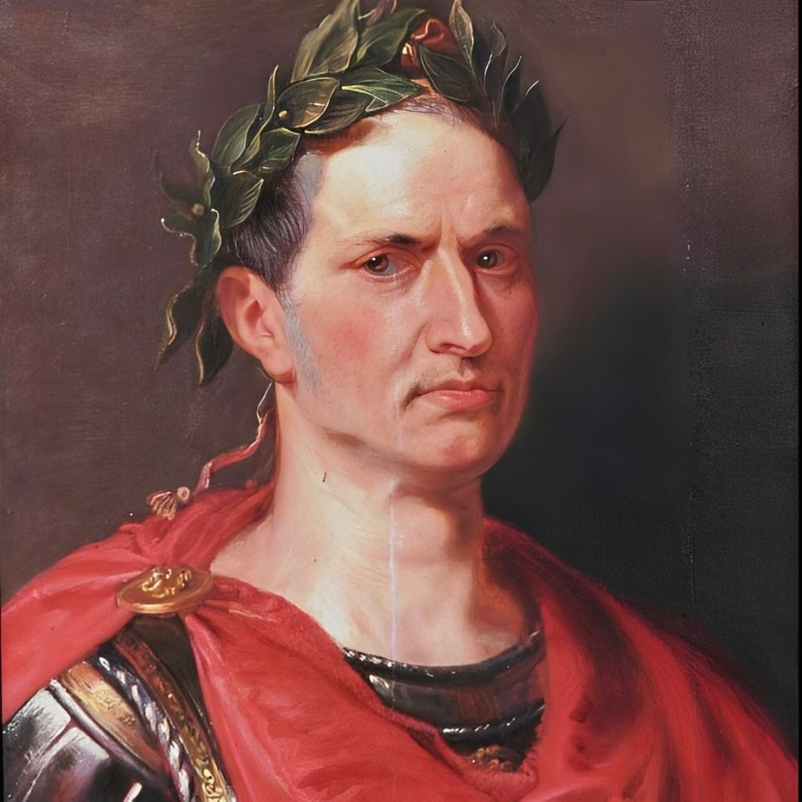
Julius Caesar
100–44 BCE
Roman general and statesman who played a critical role in the events that led to the demise of the Roman Republic and the rise of the Roman Empire. Conquered Gaul and won the civil war that made him dictator of Rome.
Key contributions: Military engineering brilliance, rapid troop movements, siege warfare expertise, and his commentaries that provide primary sources for his campaigns.
Read Details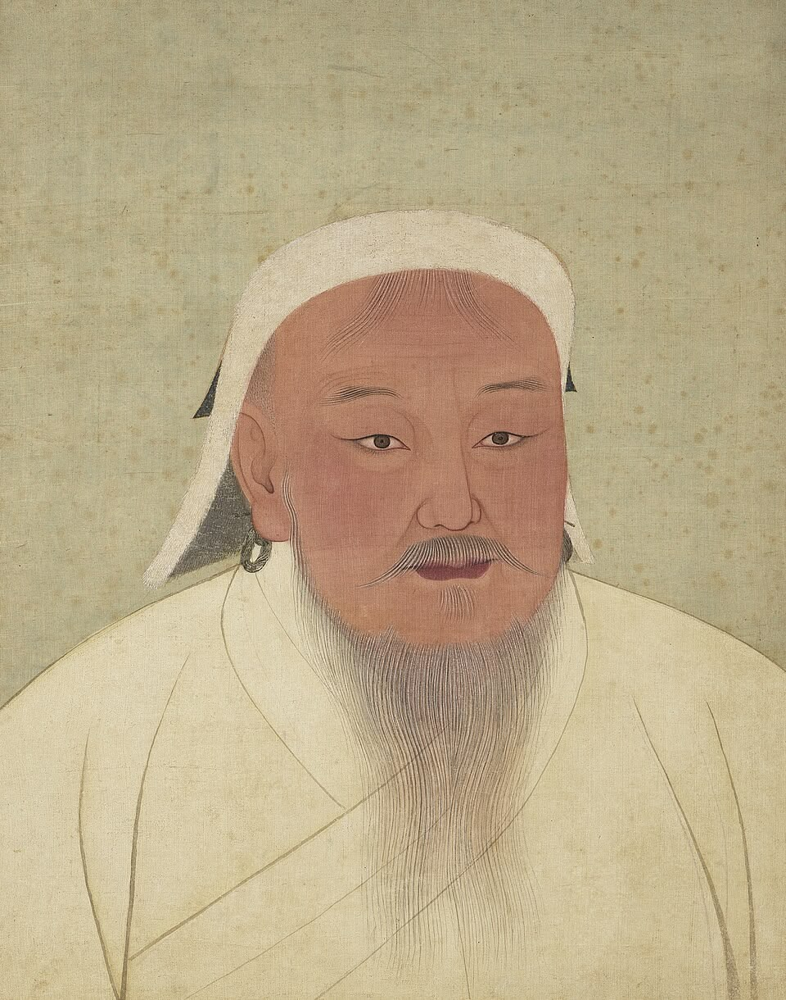
Genghis Khan
c. 1162–1227
Founder and first Great Khan of the Mongol Empire, which became the largest contiguous empire in history after his death. United the nomadic tribes of Northeast Asia and launched invasions that conquered vast territories.
Key contributions: Revolutionary military organization based on meritocracy, superior intelligence gathering, psychological warfare, and incorporation of conquered soldiers into his forces.
Read Details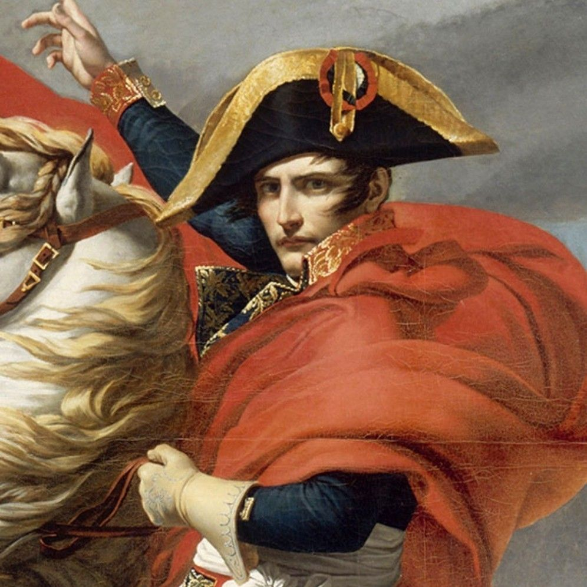
Napoleon Bonaparte
1769–1821
French military and political leader who rose to prominence during the French Revolution and led successful campaigns during the Revolutionary Wars. Emperor of the French from 1804 to 1814 and again in 1815.
Key contributions: Modernized military organization with the corps system, emphasized artillery mobility and concentration, and introduced merit-based promotion in the military.
Read Details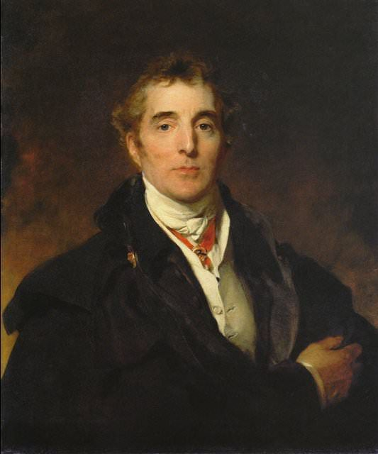
Arthur Wellesley, Duke of Wellington
1769–1852
Anglo-Irish soldier and statesman who was one of the leading military and political figures of 19th-century Britain. Best known for his defeat of Napoleon at the Battle of Waterloo in 1815.
Key contributions: Mastery of defensive warfare, attention to logistics and supply lines, and his famous "reverse slope" defensive tactics that minimized casualties from artillery fire.
Read Details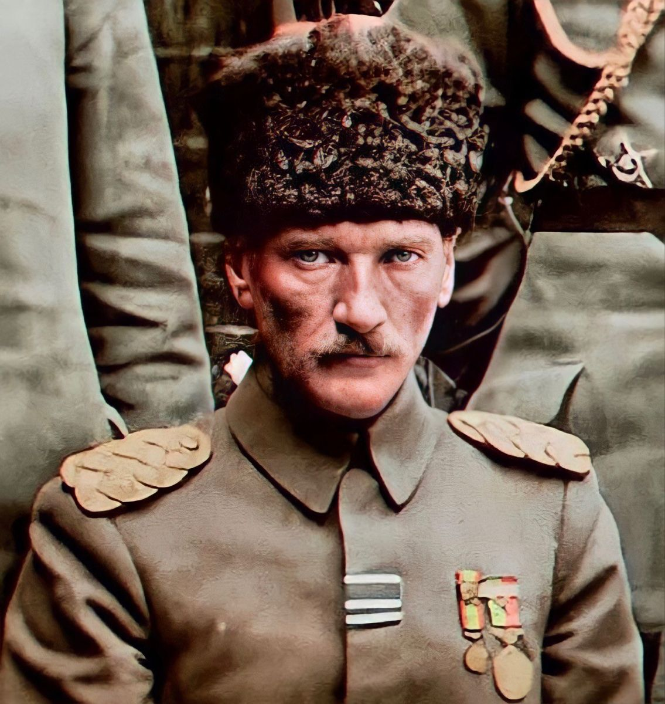
Mustafa Kemal Atatürk
1881–1938
Turkish field marshal and statesperson who was the founder of the Republic of Turkey and served as its first president from 1923 until his death in 1938. He led sweeping reforms, turning Turkey into a secular, industrialising nation.
Key contributions: Abolished the sultanate and caliphate, establishing a secular state. Granted women the right to vote in 1934, ahead of many European nations.
Read Details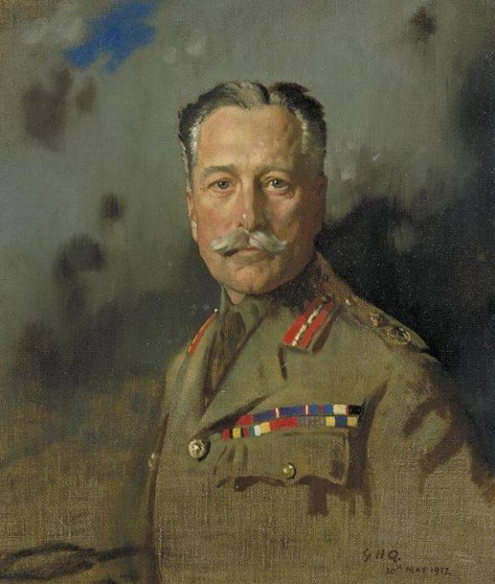
Douglas Haig
1861–1928
British Army officer best known for his command of the British Expeditionary Force on the Western Front during World War I. Controversial figure due to the high casualties under his command.
Key contributions: Advocated for continued offensive operations despite trench warfare stalemate, emphasized the importance of artillery preparation, and oversaw the transition to combined arms tactics by war's end.
Read Details
Erwin Rommel
1891–1944
German general and military theorist known as the "Desert Fox" for his leadership of German and Italian forces in the North African campaign of World War II. Regarded as one of the most skilled commanders of desert warfare.
Key contributions: Mastery of mobile armored warfare, exceptional ability to inspire troops, innovative use of limited resources, and chivalrous conduct that earned respect from adversaries.
Read Details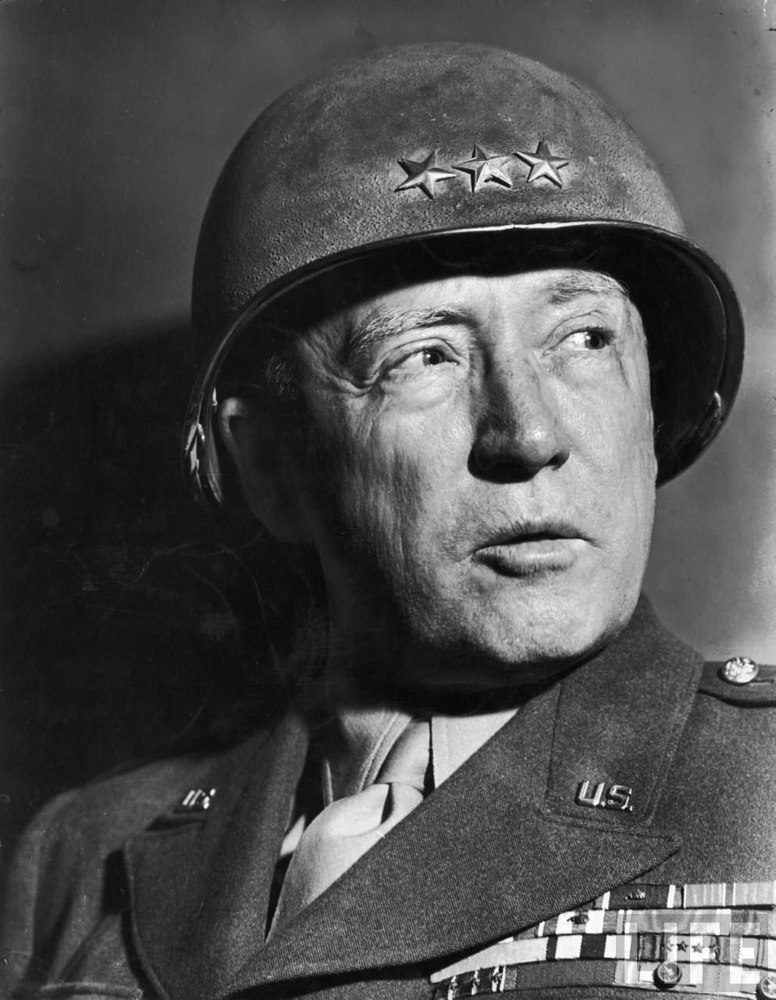
George S. Patton Jr.
1885–1945
United States Army general who commanded the Seventh United States Army in the Mediterranean Theater of World War II, and the Third United States Army in France and Germany after the Allied invasion of Normandy.
Key contributions: Aggressive armored warfare tactics, emphasis on rapid advance and maintaining pressure on the enemy, and inspirational leadership that motivated troops to extraordinary efforts.
Read Details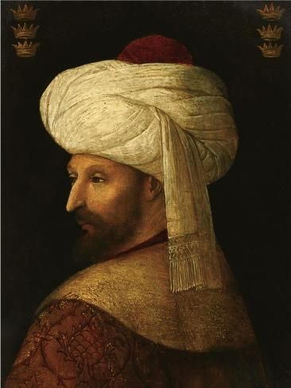
Mehmed the Conqueror
1432–1481
Mehmed was a visionary ruler who invited scholars, artists, and architects to his court, transforming Istanbul into a thriving center of culture and learning. His legal reforms unified and organized Ottoman governance for generations to come.
Key contributions: Conquered Constantinople in 1453, ending the Byzantine Empire. Transformed the city into the Ottoman capital, renaming it Istanbul. Unified Anatolia and the Balkans under a single, centralized empire.
Read Details